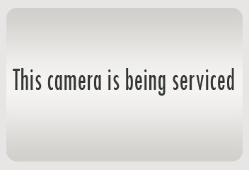

The camera feed image isn't changing!
Be patient! Images are refreshed every second, but sometimes loading times can be slow.
Wait a few seconds, and if the image does not change, try refreshing the page. If you can, try connecting to WiFi.
The image that appears says that the camera is being serviced
Sometimes this image appears when the camera feed url cannot be reached. Wait a few seconds for the feed to refresh again, and the actual camera feed should appear!
If the image is not replaced with a view of the street within 30 seconds, the camera feed may be down for that day.
The location of the camera on the map isn't correct
Some of the camera locations are not exact. If you find that a camera is nowhere near its shown location, please email selfienycwebsite@gmail.com